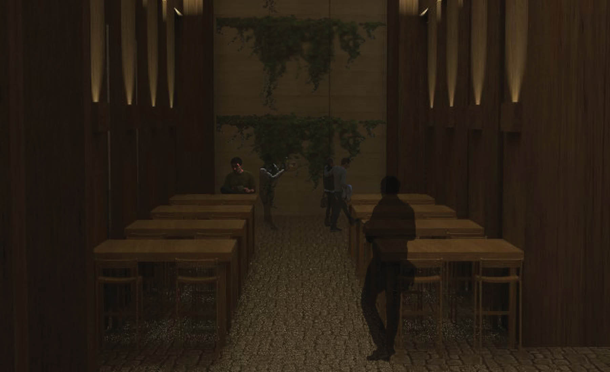

About me
Throughout my BSc and MSc in Architecture at Técnico Lisboa I always demonstrated a keen interest for innovative and adaptable methodologies in my projects. This led me to a mobility program at Tongji University in Shanghai, China, where I lived, studied, and worked for a year. While travelling around China, I came across several different realities of Urban and Architectural settings, from under-developed Uyghur settlements to Asian megacities. These experiences alerted me to the current population and urbanization growth, and the challenging future of humankind.
Since then I steered the final steps of my masters degree into researching innovative design and construction methodologies that aimed to reduce consumptions while maximizing performance. After concluding my masters cum laude and with multiple publications, I started pursuing my Ph.D in Sustainable Energy Systems. I am currently developing my thesis, focusing on the automation of analyses and optimization frameworks for urban and architectural practices where I focus on three pillars of urban analyses: Energy, Mobility, and Airflow.
Projects
May 2021 - Present
A collaborative project with MIT that aims to explore climate-driven technologies for low carbon and low energy cities. Within this project, our team will develop and validate simulation models for building archetypes in the city by using data regarding energy certifications, energy meters, and other relevant data regarding the built environment occupancy and usage. To do this, we will use simulation tools created at MIT for the development, analysis, and validation of such models. In the next stage, we will create surrogate models for the detailed analysis and optimization of urban retrofit measures using machine learning and data science techniques. These models' goals are to showcase different outputs and provide valuable information for city planners, citizens, and other relevant urban stakeholders.
January 2020 - February 2020
The tasks to develop within the scope of the Polar Lodge Project were to repair the lodge after a year spent in Collins Glacier, Antarctica, monitor performance metrics, and survey the shelter to compare, analyse and optimize its performance according to the obtained, and simulated results.
February 2020 - February 2021
The Algorithmic Design (AD) tool Khepri was used to test and apply several workflows that comprised the analysis and interpretation of urban areas, particularly informal settlements. This was made through the extraction of information from GIS-based layouts to generate algorithmic models of the area, which allowed to perform automated sets of simulations in defined domains for different parameters. The results were visualized and interpreted through different platforms. That allowed the establishment of key parameters in the design and construction of informal settlements.
Results obtained through the automated sets of solutions demonstrated which parameters have a considerable impact in the built environment performance. It was also visible that the urban fabric and context influenced the levels of impact of these design and construction parameters. Accordingly, the need to test several sets of simulations with the goal of obtaining the best performance results for several parameters and different urban contexts, enticed the integration of multi-objective optimization algorithms in the above-mentioned workflows.
Research
Algorithmic Design, Simulation, and Optimization
Nowadays the large set of available simulation and design tools brings numerous benefits to the urban and architectural practices. One of these advantages is the ability to reproduce an area’s built environment at a holistic level. However, most of these tools require appropriate descriptions of simulation inputs and post-processing of the respective outputs. The description of these inputs is laborious and requires expertise, and inappropriate post-processing can mislead the planning solutions. To tackle these problems, my research explores how to automatically generate simulation models and workflows that represent urban and built environments focusing on three urban modules: Energy, Mobility, and Airflow. By integrating Algorithmic Design, simulation, and optimization in a single framework, I aim to facilitate analysis processes for urban and architectural practices. This will allow practitioners to explore their solutions with more confidence and less effort, contributing to more sustainable cities.
Master's Thesis
Integrating Algorithmic Processes in Informal Urban and Architectural Planning
A case study of a Maputo's neighborhood

Abstract: Urbanization growth in developing countries is an undeniable reality that translates into concerns regarding these countries’ ability to include slums, underdeveloped communities, and neighborhoods in economic, health, and climatic goals. This research focuses on the integration of algorithmic design and analysis strategies to develop a methodology to study, define, and measure key parameters that affect the design and rehabilitation of these areas. Wall and roof construction scenarios are tested for improvements, and design dimensions such as height and floor area are analyzed to establish design and comfort thresholds. An optimization process is integrated with the workflow to maximize thermal comfort, rehabilitation costs, and fairness of performance among all the buildings. Results show improvements in thermal comfort with several different construction scenarios from which a two-staged rehabilitation plan is defined. The first stage comprises the identification of buildings that significantly improve with rehabilitation, and the second defines the most suitable construction scenarios considering the cost of application and comfort improvement for each building. Additionally, design guidelines regarding the parameters tested for building design in the area are researched and documented, revealing the conflictive nature of different design objectives, and the architect’s role in the tackled design problems.
Journal articles
Conflicts in Passive Building Performance
Retrofit and Regulation of Informal Neighbourhoods
Abstract: Urbanization growth in developing countries raises concerns regarding these countries’ ability to consider slums, underdeveloped communities, and neighbourhoods in economic, health, and climatic goals. This research proposes a methodology that integrates algorithmic design and analysis strategies to define, study, and measure key parameters that affect the rehabilitation of these areas. Construction scenarios and design dimensions are analysed to establish design and comfort thresholds, and alternatives are simulated and tested to identify possible improvements. The methodology includes an optimisation step integrated in the workflow that maximizes thermal comfort, minimizes costs, and ensures fairness in the rehabilitation of large sets of buildings. This step identifies improvements in thermal comfort for different construction scenarios from which a two-staged rehabilitation plan is defined. The first stage comprises a sensitivity analysis to identify building materials regarding their improvement and cost of application, and the second defines the most suitable construction scenarios considering the results from the optimisation process for each building. Additionally, we research and document guidelines regarding the parameters tested for building design, revealing the existing conflicts between performance objectives, and the architect’s role in their prioritization.
Comparison of passive design strategies to improve living conditions:
A study in Ondjiva, Southern Angola
Abstract:Passive design strategies aim at creating comfortable buildings while reducing their energy consumption. Simple strategies such as the correct orientation of the building, the correct design of the building's openings, or the correct sizing of the building's constituent parts (such as walls, ceilings, etc.) according to their material specificities (regarding the region's climate) would greatly improve the performance of a building. This paper intends to show how the application of simple passive techniques in housing design can reduce the energy loads spent annually and improve the house's interior comfort. It translates the results of interior comfort computer simulations into suggestions for the application of passive strategies in housing design, to improve the living conditions in Southern Angola.
Book Chapters
Software Tools
Abstract: Nowadays, there are several simulation tools for building performance analysis. Whether for energetic or structural analysis, these tools provide a powerful knowledge-based support for the design, concept, and execution of a project. With these tools, one can assess multiple building performance indicators in all the design stages. This chapter provides an integrated design and analysis process for the construction of self-made houses in warm climates.
Conferece articles
Back to the future
Reverse-designing a shelter for extreme weather in Antarctica
Abstract: The impacts of climate change and extreme weather events can be seen all around us, causing record-breaking damage. Such events, coupled with wars and social unrest, are resulting in people losing their homes at an unprecedented growing number, forcing them to rely on semi-permanent structures. To explore the design of these structures in extremely cold conditions, a test tent made of innovative materials, capable of resisting the extreme weather in Antarctica, was made and tested on a site at King George Island, in 2019. The shelter was left on site for twelve months, during which some damage was recorded, resulting in high levels of humidity in the structure, and wind damage on the outermost fabric layer. This paper attempts to reverse-design the tent comparing theoretical and field data. Using an algorithmic design tool, the shelter was modeled within the site contours, and comfort and airflow simulations were made to assess the thermal properties of the used materials. Durability and comfort performance are discussed and compared with permanent standard structures, as are their implications on the design of similar projects in extreme weather conditions in future unpredictable climates.
Integrating Algorithmic Processes in Informal Urban and Architectural Planning
A case study of a Maputo's neighborhood
Abstract: Urbanization growth in developing countries is an undeniable reality and translates into concerns regarding these countries’ ability to include slums, underdeveloped communities, and neighborhoods in economic, health, and climatic goals. This research focuses on the development of algorithmic design and analysis strategies to compose a methodology to study, define, and measure key parameters that affect the design and rehabilitation of these areas. Wall and roof construction scenarios are tested for improvements, and design dimensions such as height and surface area are analyzed to establish design and comfort thresholds. Results show improvements in thermal comfort with several different construction scenarios from which a two-staged rehabilitation plan is defined. The first stage comprises the identification of buildings that significantly improve with rehabilitation, and the second defines the most suitable construction scenarios considering the cost of application and comfort improvement.
From Macro to Micro
An integrated algorithmic approach towards sustainable cities
Abstract: As urbanization rapidly increases towards concerning levels, new methodologies and approaches are required to shape future cities. This research combines passive design approaches with building performance simulation in the same algorithmic description, to highlight the bidirectional impact of the building and the urban context in which it is inserted. To that end, the proposed workflow employs an algorithmic design tool along with validated analysis engines, to assess incident solar radiation and comfort metrics. We apply this methodology in a case study, exploring alternative building geometries to mitigate the consequences of uninformed design decisions in the environment. Results show that the application of passive design strategies can be done within early design stages, allowing a continuous workflow from project to construction while minimizing time and labour requirements regarding building efficiency.
Research analysis of urban and social patterns in the city
Shared bicycles and their influence on urban fabric
Abstract: Shared bicycles have been around for a while and growing steadily in China. Recently, concept and volume of this new form of shared transportation vehicles captured a widespread attention and usage. This study is focused in two areas known as former French concession in Shanghai and in Xintiandi. Using one of the popular bicycle sharing app “Mobike” location and number of available bicycles is captured during a period of one week, three times a week, and every eight hours. Furthermore, this data is correlated with the existent urban framework by analysing certain aspects such as proximity to building services and daily life of locals. Allowing a quantitative and comparative evaluation with other sites regarding predictors of urban development, cyclers safety and urban quality. Then a proximity factor is introduced measuring the distance to key services, such as supermarkets, restaurants or office buildings, that impact life in the area. Finally, it will be possible to compare the quality of these areas and take conclusions regarding future studies and comparisons.
Design Studio
A selected showcase of architectural and design projects developed during my Master's degree in Architecture at Instituto Superior Técnico and at College of Architecture and Urban Planning of Tongji University.
M-Home - Adaptable Forest Home
M-Home is a timber structured house designed and prepared for the wilderness. This house is able to adapt its insulation needs and therefore, its thermal performance to all climates and forest types. Equipped with bathroom, living room and kitchen on a 75m2 ground floor. On the second and third floor it encloses a 50m2 room and studio plus two terraces that facilitate renewable energy gathering such as Solar and Wind power. Finally, the charred wood finishing provide a more durable home as well as a less costly maintenance.
The proposal aims for an adaptable character. Thus, the windows were created parametrically in number, width and scale of glazing to perform multiple thermal and daylighting simulations according to the location of the project and shape of the windows. The charred wood siding are UV, Weather, Rot and bug resistant, and can last up to 80 years without little to no maintenance. These factors plus the water drainage system within the hollow structural wooden beams make this timer home fit to any forest and weather
BETA - Culture as a driver for growth in the city, Mindelo, S. Vicente Island, Cabo Verde
The program is to provide a public space intervention on the natural, and constructed territory of the city. The goal was to provide and influence the city’s development and urban qualification. To achieve this, it was elaborated a two stage plan for the structure of this proposal, which culminated in the design of a cultural promenade within the heart of the city of Mindelo, weaved together in core areas by public squares, which represent a strong push/pull force for the people. The first stage, consequently, was the elaboration of strong heuristics, concept and program that would proportionate suitable conditions to cultural, confort and economic growth of the city. There is an enormous cultural expression present in the streets of the city of Mindelo, and there are less than capable conditions to absorb this vibrant energy. This inability reflects itself in a city full of potential and beautiful social expression without the means of exploring or improving it. Thus, this stage focused mainly on the requalification of the existing pedestrian and vehicle flows of the city, creating a more fluid connection through several cultural landmarks of the city such as the Palacio do Povo, the town market, the municipality headquarters, the church or several other famous buildings and services included in this street block.
The second stage closes the proposal and zoning plan with the requalification of the encompassed public squares. It is necessary to complete the zoning plan with the creation and design of public squares that define the promenade with the goal of bringing the existing cultural expression in the village to one of the most beautiful bays in the world and promote bidirectional synergies between the parts. With the existing flows in the city and the cultural connection with the public street being utterly clear, the design of the squares inevitably fell on the alignments of the streets, position, and on a instrospection of what is a public square. Thus the concept of alpha and beta zones emerged, which defined circulation and mingling areas, that in paralell with the terrain, materiality, and positioning, function as variables for the solution of this complex system characterized by dynamic social and cultural values.
Retail Facility - Interior Design (When Art meats Retail), K11, Shanghai, China.
“Everything is Architecture” - Hans Hollein
In this project we had to develop an interior space with the topic, “Immaterial Architecture” for the K11 Mall, in Shanghai. First we started off isolating what was spatial immateriality. We analized factors like light, shadow, gravity, smell, sound, electromagnetism, among others. For this project, as an immaterial interior artistic space sound seemed like the perfect fit. A mechanical wave that can reverberates around a physical space, influencing its state. After this initial starting point, the chinese bell spiritual culture acted as a driver for the idea of shifting spatial awareness in a gallery within the mall through the reverberation of multiple bells' sound waves. After several experiments, a method was developed to create bell ringing patterns within the gallery through electromagnetic push-pull solenoids. These allowed us to ring the bell remotely and automatically, creating different spatial patterns.
For the bells' design, we wanted them to have the maximum reverberation possible to allow their sound waves to trigger the human ear, through their intensity and positioning. For this purpose, we decided to minimize the sound absorptance coefficient order to provide the shape that has the best reverberation possible and, therefore, enhance the space-sound experiment. A single objective optimization process with a genetic algorithm helped us settle between three possible shapes with the same results.
Highrise Heritage, Requalification of a 1930’s Skyscraper, Metropolo Hotel, Shanghai, China.
The project tries to establish urban relations between two major routes in shanghai. The bund and East nanjing road, both streets that define the corner of fuzhou road are pointing towards this major network. The aim of this project is to renew an area eroded by vehicle traffic and noise, bringing pedestrian and liveliness to its core and arteries. The main identified core strengths of the place are the fact that it is one of the tallest buildings in the area, has a strong iconic art deco style, and provides multi-layered visual relations with iconic Shanghai areas. However, the building shows a lack of pedestrian use and inneficient planning both in the northern open private space and in the adjacent crossroads.
The way that this problem was dealt with lies on the connections created by open spaces and accessibilities within the requalified building. These conenctions were created by restructuring the existing building into a mixed use block. The original building identity was preserved by its symmetry, the buildings art deco style, and connections with the existing main streets, while portions of the building's extensions were opened to unveil a rich open space.
The block incorporates three buildings, two belonging to the original hotel part of the Metropolo chain to the south, and one start up office studio building adjacent to the northern façade. Not only these open spaces generate a soft synergy between private and public domains, but also develop a natural relation between the existing program. The metropolo chain and the owner of the office building may provide contracts to companies and start ups, in which part of the the contract is, eventually an outsource investment fraction for the hotel. The total program includes, 130 hotel rooms, 2 restaurants, 3 galleries and 10 studios.

Curriculum
Work Experience:
RESEARCHER
IN+ | Present
Developing my PhD Thesis and research regarding Urban modelling, simulations, and Optimization for more sustainable cities.
RESEARCHER
INESC-ID | February 2020 - February 2021
Performed research activities and publications concerning the integration of algorithmic design, simulation, and optimization in the architectural practice.
Teacher Assistant
Técnico Lisboa | October 2019 - Present
Assitance to Environmental Design courses of the Master's of Architecture - Workshops on Building Performance Simulation and Algorithmic Design.
Urban Planning Internship
Tongji Urban Planning and Design Institute | September 2018 - December 2019
During this period, I integrated a team responsible for the design and planning of new urban cores. I also took part in project presentations for clients.
Education:
PhD Candidate in Sustainable Energy Systems
Técnico Lisboa |February 2021 - Present
Masters in Architecture
Técnico Lisboa |September 2018 - September 2020
Final grade: 17/20; Thesis grade: 20/20
Bachelor in Architecture
Técnico Lisboa |September 2013 - September 2016
Final grade: 13/20
Erasmus Program
Tongji University |February 2021 - Present
Final grade: 93/100 - Mobility Program in Shanghai, China.
Extra-curricular Activites:
RESEARCH MEMBER
ADA | 2018 - Currently
Algorithmic Design for Architecture is a research group at IST Lisbon that explores the integration of algorithmic processes in the architectural practice. Particularly, the group researchs fabrication, representation, analysis, and optimization methods for several architectural fields such as energy, lighting, mobility, accoustics, structural, among others.
Skills:
Design tools
Analysis tools
Awards:
Jeffrey Cook Plea Student Travel Scholarship 2020
Diploma for Academic Excelence 2019/2020